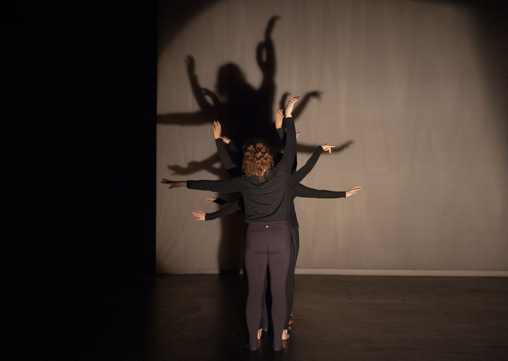
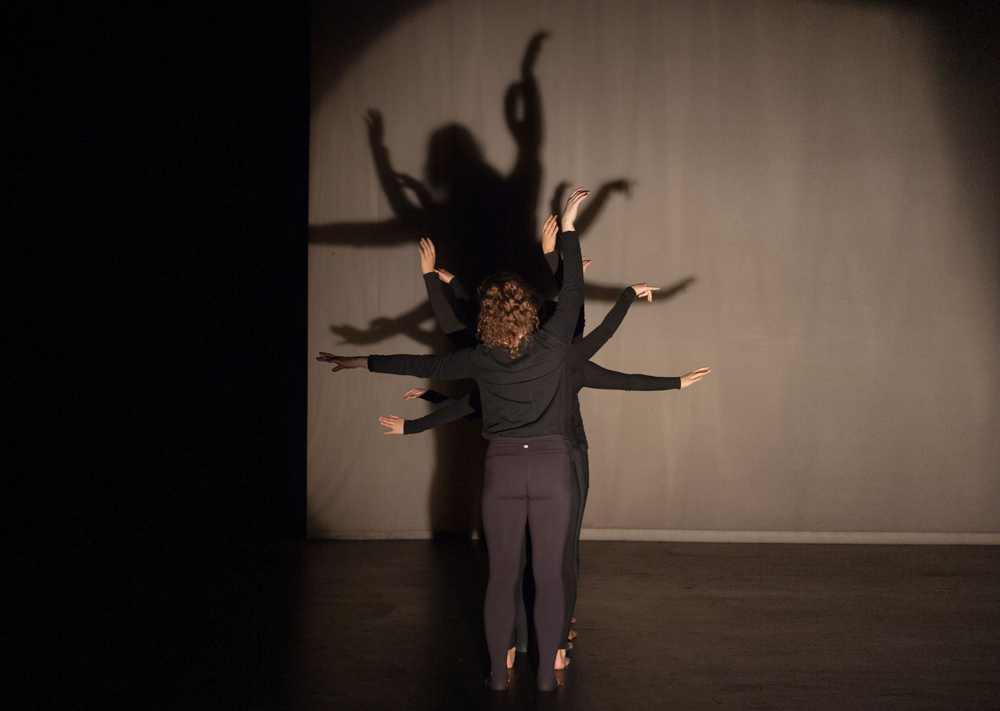

'MAGOS' examines the remains of love and presence, seven elements of a woman's persona, guilty prayers in repetitive motions, and all the parts of a person that stay with us no matter the distance.
Choreography: Jocelyn Reyes
Performers: Jessica Bozzo, Sienna Calvin, Taylor Jordan, Tayler Kinner, Nicole Maimon, Jasmine Reyes, Jocelyn Reyes, Mia Simonovic
Music: Cucurrucucu Paloma by Lola Beltran, Tamboreando y el ultimo paso de Tochtli (Conejo) by DJ Hectic, Carmen Habanera by George Bizet, Tiempo de Valz by Chayanne, El Baile Del Beeper by Oro Solido, Apple Bottom Jeans by Flo Rida Ft. T Pain, Spanish Rock and Roll Mix by Jive Bunny and The Master Mixers, No Rompas Mas Mi Pobre Corazon by Caballo Dorado, Payaso De Rodeo by Caballo Dorado, Cumbia en La Playa by Grupo Kual, Amor Eterno by Juan Gabriel, La Vida Es Un Carnaval by Celia Cruz, Grand Style by Byetone, Sin Ti by Los Panchos mixed by Guillermo Webster and Jocelyn Reyes
Presented: Joe Goode Annex
'Accretion', three two-person affections, presents the accumulation and collision of parental, sibling and romantic love.
Choreography: Jocelyn Reyes
Performers: Jessica Bozzo, Bruna Gill, Ari Holtan, Jocelyn Reyes, Aldair Rivera, Leah Worthington, Celeste Alexander(Cellist), Zane D'Amico(Cellist), Lizzie Jones (Violinist), Jasmine Reyes(Cellist), Leo Steinmetz(Cellist)
Music: Sonata for Violin and Cello by Ravel, The Girl with the Flaxen Hair by Debussy, The Swan by Saint Saens, Por Una Cabeza by Carlos Gardel, Waltz No. 2 by Shostakovich, Sounds by Jocelyn Reyes
Presented: SAFEHouse Arts
'Coming to Terms' examines the shifting relationship between two people coming from unstable environments. This piece is about coming to terms with the past to understand the present.
Choreography: Jocelyn Reyes
Performers: Bruna Gill, Jocelyn Reyes, Jasmine Reyes (cellist)
Music: Cello Suite No.2 in D Minor by Bach, Sounds by Jocelyn Reyes
Presented: SAFEHouse Arts
Bits is a quirky, humorous modern dance piece which examines interactions between the individual and the group using a fragmented movement language.
Choreography: Jocelyn Reyes
Performers: Allyson Adams, Caileigh Knapp, Claudia Mayoss, Michelle Olson, Jocelyn Reyes
Music: Bits of ... Old Legend by Crausaz, William Tell Overture by Rossini, Can-Can by Offenbach, The Well Tempered Clavier (C Minor Prelude) by Bach
Presented: UCLA, Glorya Kaufman Theater


Can instability open up new possibilities for ways of being?
Choreography: Jocelyn Reyes
Performers: Jessie Grimes, Michelle Olson, Jocelyn Reyes, Amanda Sun
Music: Collage of Syyllinen Syli (Varttina Iki), Ancha es Castilla Sound Score (EVOL), La Vaca (Mala Fe), El Gato Volador (El Chombo), and Todos Me Miran (Gloria Trevi), by Jocelyn Reyes
Presented: UCLA, Glorya Kaufman Theater, Atwater Village Theater


Being Bee is a modern dance piece that examines care and loss in the midst of everyday chaos.
Choreography: Jocelyn Reyes
Performers: Amanda Adams, Amilcar Aguilar, Barry Brannum, Jocelyn Reyes, Lucas Santhon, Gracie Winston, Bora Yoon
Music: Remix of String quartet No.8 in C minor by Shostakovich, Gnossienne 1 by Erik Satie, Vexations by Erik Satie and various sounds produced by Jocelyn Reyes
Presented: UCLA, Glorya Kaufman Theater, UCLA Healthy Campus Initiative Event


 

In-Self is a modern dance piece that examines the nexus of schizophrenia and religion.
Choreography: Jocelyn Reyes
Performers: Tali Aires, Rika Jitosho, Madison Olandt, Michelle Olson, Jocelyn Reyes, Amanda Sanchez
Music: Sounds by Jocelyn Reyes and Guillermo Webster
Presented: Redcat Studio, Curtis Theater, UCLA Glorya Kaufman Theater